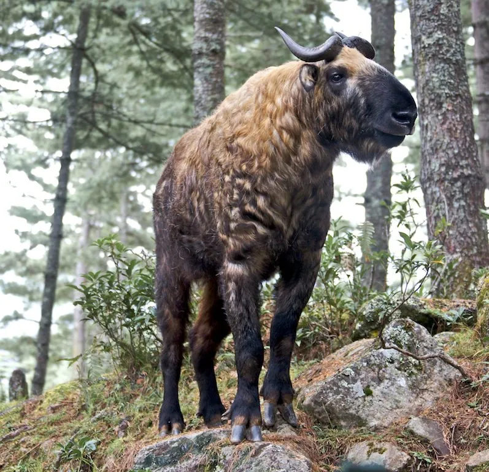

哺乳动物 · 动物界
羚牛 Budorcas taxicolor

中国西南高山的大型牛科动物，毛色金黄或灰褐、角向外弯曲似羚羊，成群活动，有“六不像”之称，国家一级保护动物。
- 分类
- 门脊索动物门纲哺乳纲目偶蹄目科牛科属羚牛属
- 栖息环境
- 海拔 1500–4500 米的高山森林、草甸与岩壁
- 地理分布
- 中国西南的四川、陕西、甘肃、云南、西藏及印度、缅甸、不丹
- 保护级别
- IUCN 易危（VU）；中国国家一级保护动物
物种志
羚牛体长 1.7–2.2 米，肩高 1.1–1.3 米，体重 250–400 kg，雄性大于雌性。它的体形粗壮，毛色有金黄、浅黄和灰褐等类型，毛长而蓬松；面部似羊，角从头顶向外后方弯曲，吻部宽大，四肢粗壮，蹄大而宽，尾巴短。
羚牛分布于中国西南的四川、陕西、甘肃、云南、西藏以及印度、缅甸和不丹的山地，栖息于海拔 1500–4500 米的高山森林、草甸和岩壁。它结成几只至数十只的群体，以草、树叶、嫩枝和竹叶为食，夏季上移到高山草甸，冬季下移，性情较凶猛，受惊时会成群冲撞。因外形集合了牛、羊、羚等多种动物的特征，被称为“六不像”。雌性妊娠期约 8–9 个月，每胎 1 仔。由于栖息地破碎和捕猎，羚牛被列为易危，中国将其列为国家一级保护动物。
形态与习性
- 食性草、树叶、嫩枝与竹叶
- 体长1.7–2.2 m，肩高 1.1–1.3 m
- 体重250–400 kg，雄性大于雌性
- 寿命野外约 15–20 年
- 繁殖妊娠期约 8–9 个月，每胎 1 仔
- 毛色金黄、浅黄或灰褐等色型
- 别称“六不像”，外形集合多种动物特征
趣味知识
- 羚牛因外形像牛、羊、羚等多种动物，被称为“六不像”。
- 它的角从头顶向外后方弯曲，形状与牛羊都不同。
- 羚牛结群活动，受惊时会成群冲撞，性情较凶猛。
- 中国将羚牛列为国家一级保护动物。